О нас
-
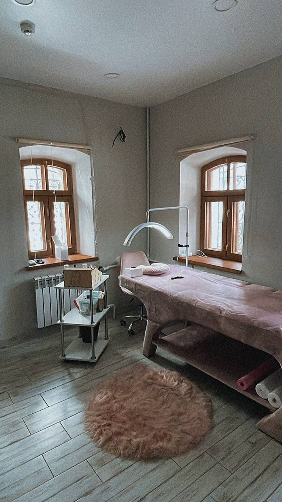
-
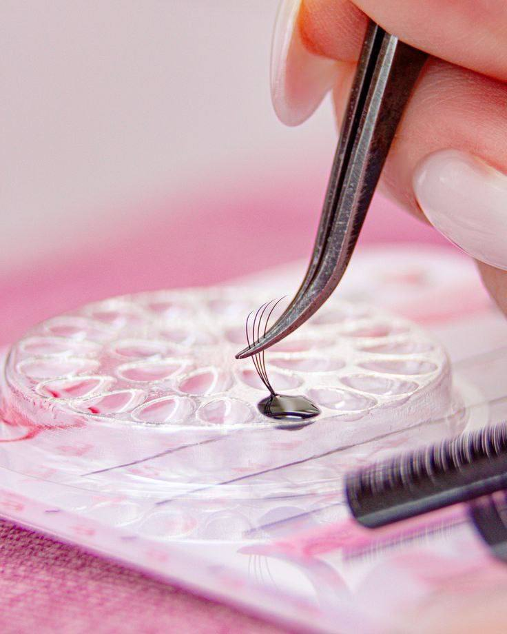
-
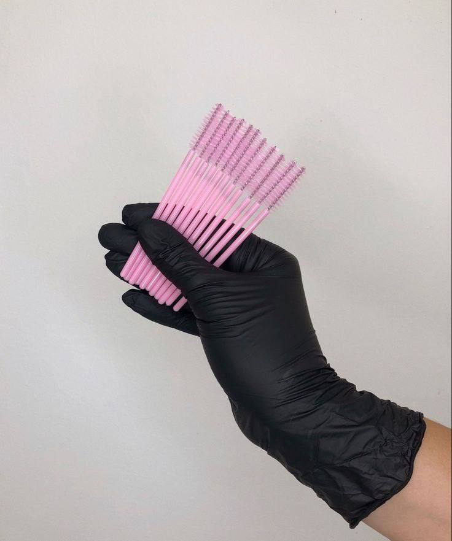
-
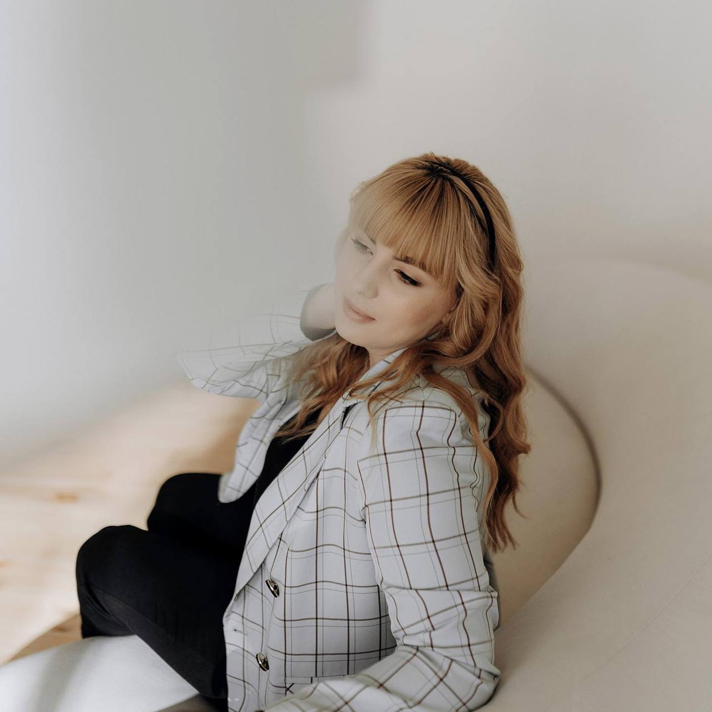
Рада приветствовать Вас здесь! Меня зовут Юлия, я мастер по наращиванию и ламинированию ресниц с опытом работы 4 года. За все это время более 3-х тысяч прекрасных девушек остались в восторге от своего нового взгляда после того, как побывали у меня на процедуре.
Выбирая меня как мастера вы получаете:
- Индивидуальный подход к каждому клиенту
- Развернутую консультацию перед процедурой, чтобы поминать, какой результат будет в итоге
- Качественные материалы, которые зарекомендовали себя на мировом рынке (Barbara,Lovely,Be perfect, Le mat, Enigma)
- Удобную кушетку, выполненную на заказ, теплый пледик и подборка любимых многими программ
- Долгую носку материала (4-8 недель)
Моя уютная студия находится в самом сердце города Липецка по адресу Фрунзе,21 (Фрунзенский бизнес-центр)
Виды процедур
-
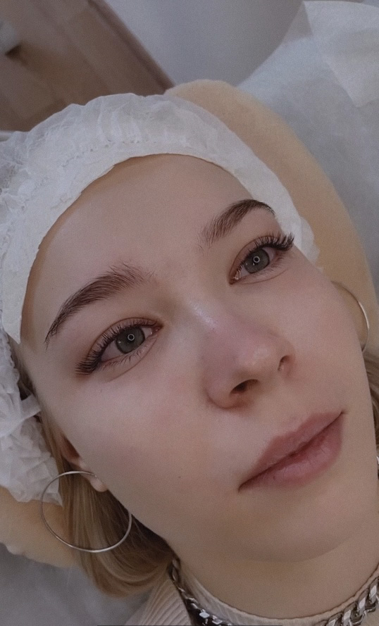
Классика (1D)
Это самое естественное наращивание, для тех, кто любит натуральность. Данный объем предполагает то, что мастер на каждую родную ресницу клиента клеит одну искусственную. Идеальный вариант для тех, кто делает наращивание впервые.
-
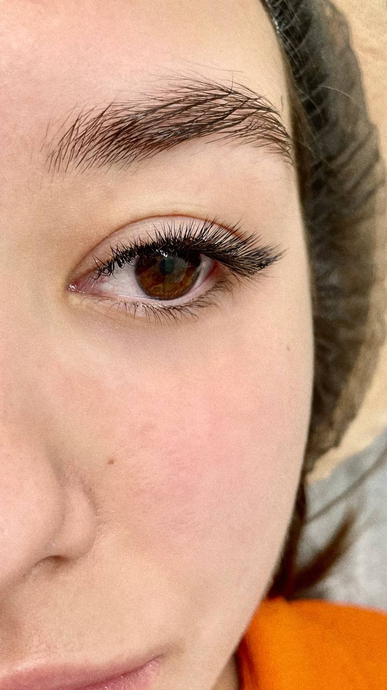
1.5D
Подходит для создания естественного образа. Предполагает чередование объемов, т.е. на одну родную ресничку ставиться одна искусственная, на рядом стоящую пучок из двух ресниц, и так на протяжении всей ресничной линии.
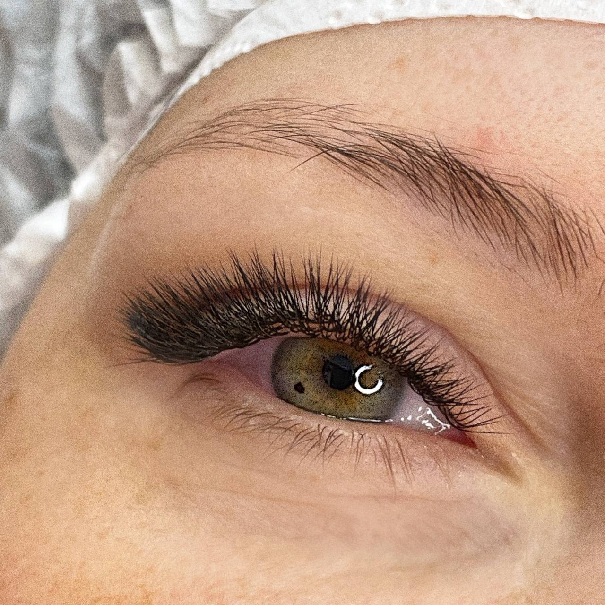2D
Самый популярный выбор среди клиентов. Данное наращивание придает яркость взгляда, не перегружая его. На каждую родную ресницу клеится две искусственные.
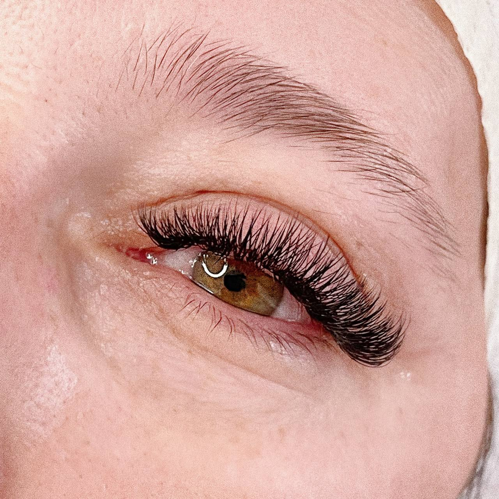3D
В процессе такого наращивания на одну натуральную ресничку накладывается сразу 3 искусственных. Такой объем подойдет для тех, кто любит яркий взгляд и хочет поспать на 20 минут дольше утром.
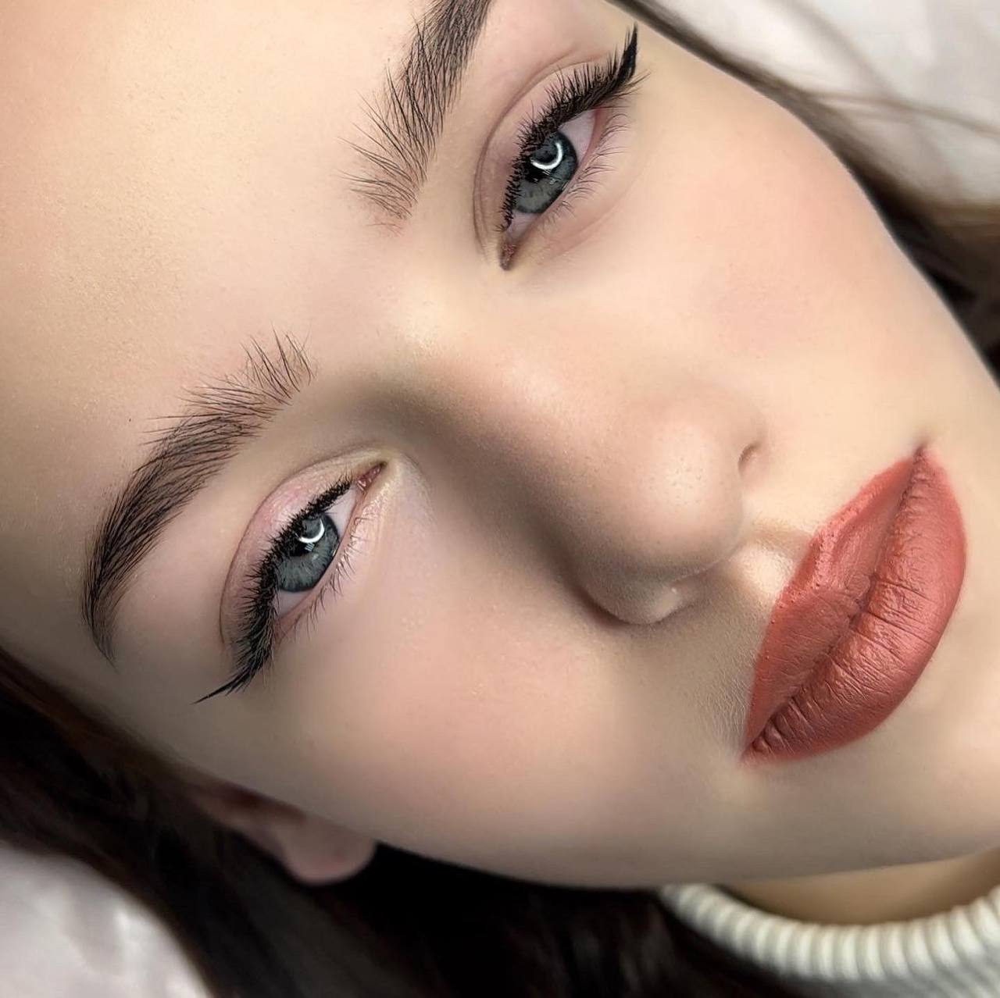4D
Можно отнести к мега-обьему, ведь на одну натуральную ресницу ставится сразу четыре искусственные. Здесь важно оценить качество и толщину натуральных ресниц, ведь если не верно выбрать объем, то можно испортить ресницы. Подойдет для эффектных девушек с ярким образом.
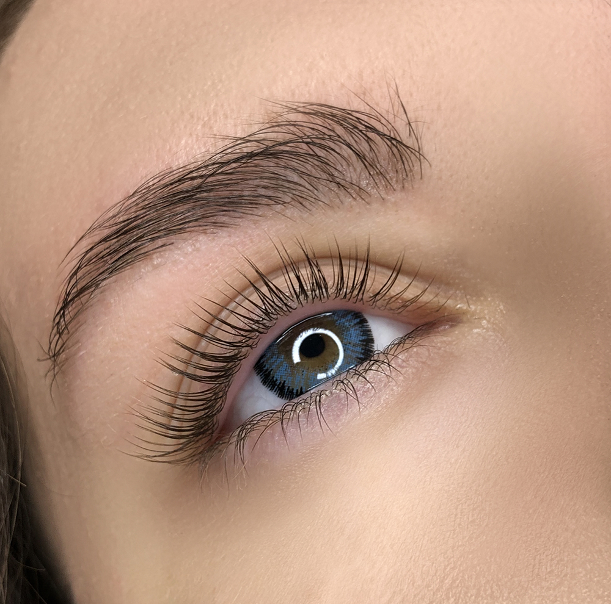Ламинирование
Это косметическая процедура с полуперманентным результатом, улучшающая их внешний вид. Последовательное нанесение специальных составов приподнимает и завивает волоски, делая их длиннее и придавая им привлекательную форму. В результате ресницы выглядят более здоровыми и ухоженными.
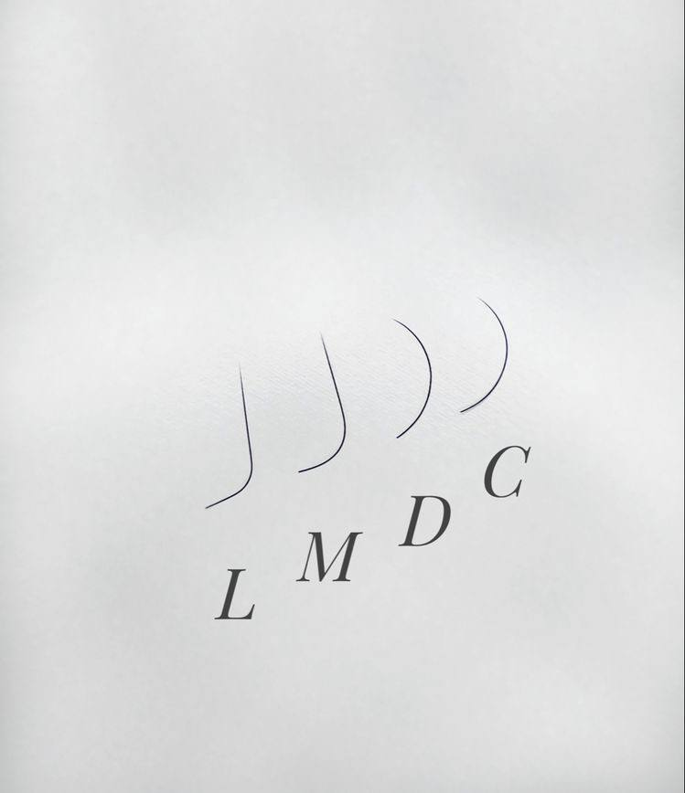Виды изгибов
«А КАКОЙ ИЗГИБ МНЕ ПОДОЙДЁТ?» - этот вопрос самый часто задаваемый перед процедурой наращивания ресниц. Расскажу вам про 4 основных вида изгибов.
Изгиб С
Самый натуральный и наиболее подходящий по изгибу родным ресницам. Если вы хотите подчеркнуть свой взгляд, но при этом не делать сильный акцент на ресницах, то выбирайте его. Хорошо подходит под эффект стрелки.
Изгиб D
Более подкрученный изгиб. Есть категория девчонок, которые выделяют только его! Ведь изгиб D очень хорошо ложится на вниз растущие ресницы! А главное, что несмотря на свой сильный завиток, он не выглядит «ненатурально»!
Изгиб M
Я его люблю за то, что он очень круто открывает взгляд. Делает тот самый желанный акцент там, где надо. Отлично скрывает нависшее веко.
Изгиб L
Ножка ресницы под углом 90°. Удлиняющий. Идеально для создания секси стрелки.
Но не забывайте, что я могу с легкостью смиксовать несколько изгибов между собой и сделать тем самым ваше наращивание незабываемым и очень индивидуальным🥰
Прайс лист
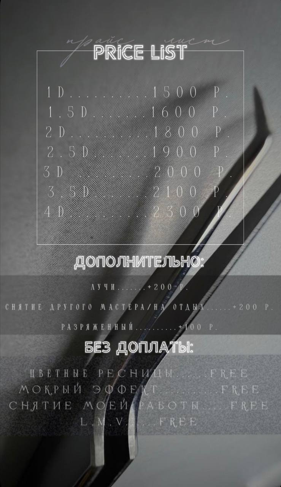